marki
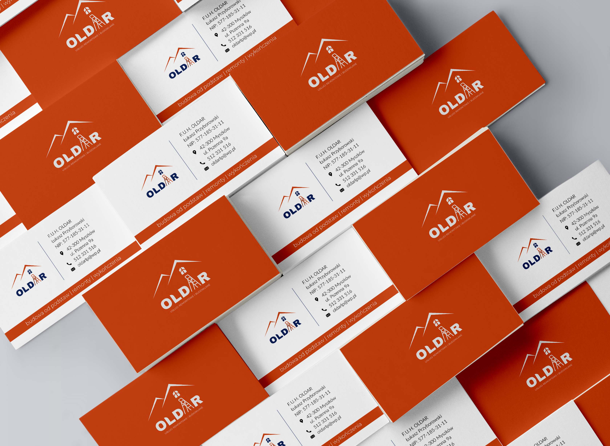
scroll
projekt logo
dla firmy budowlanej
projekt logo
dla firmy budowlanej
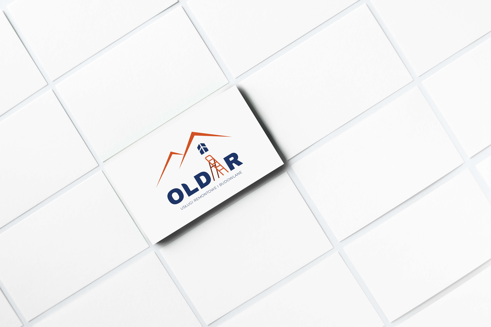
#D35023
#203567
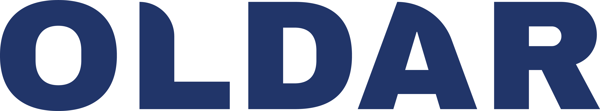
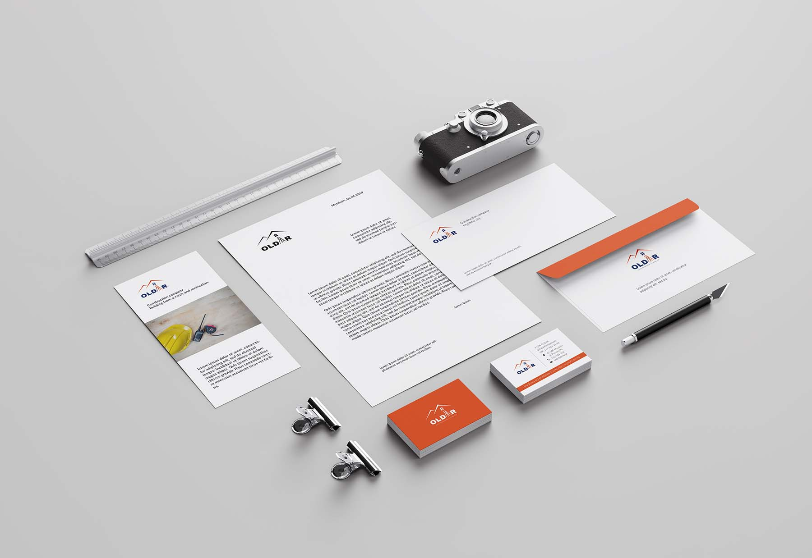
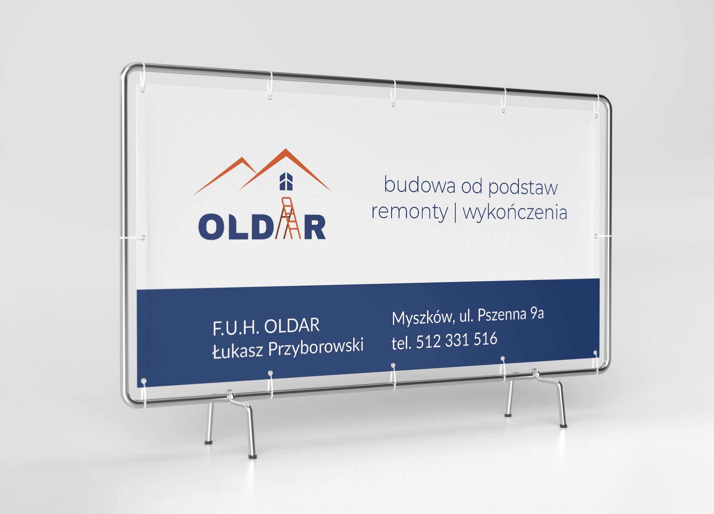
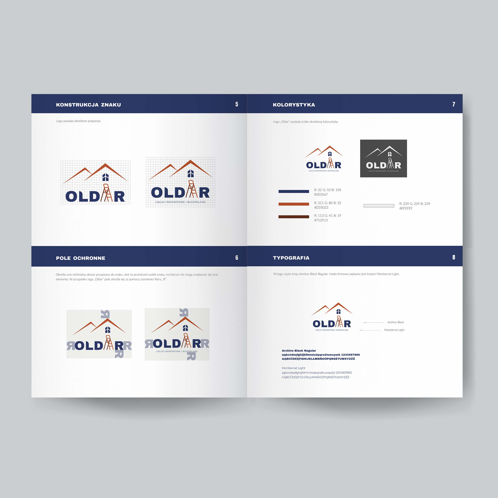
kolejny projekt
ulotka i wizytówka
dla producenta obuwia
ulotka i wizytówka
dla producenta obuwia
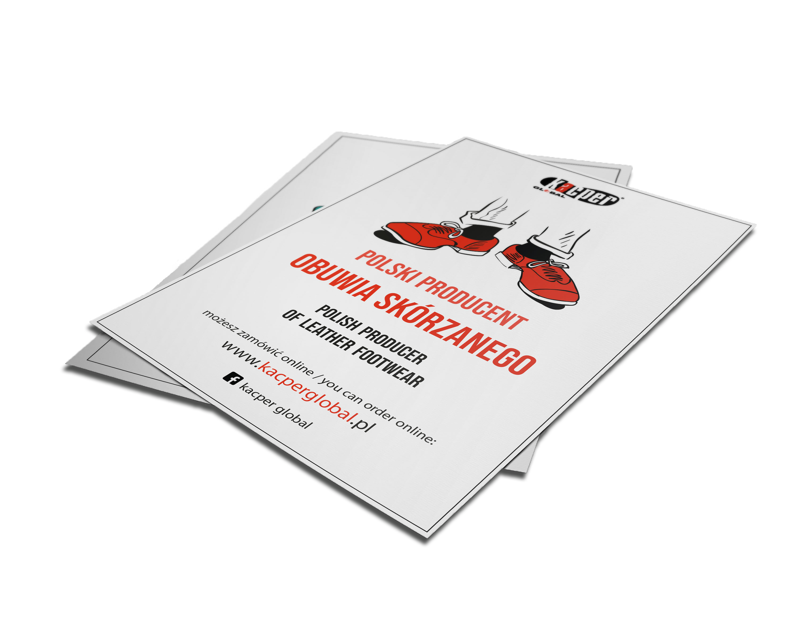
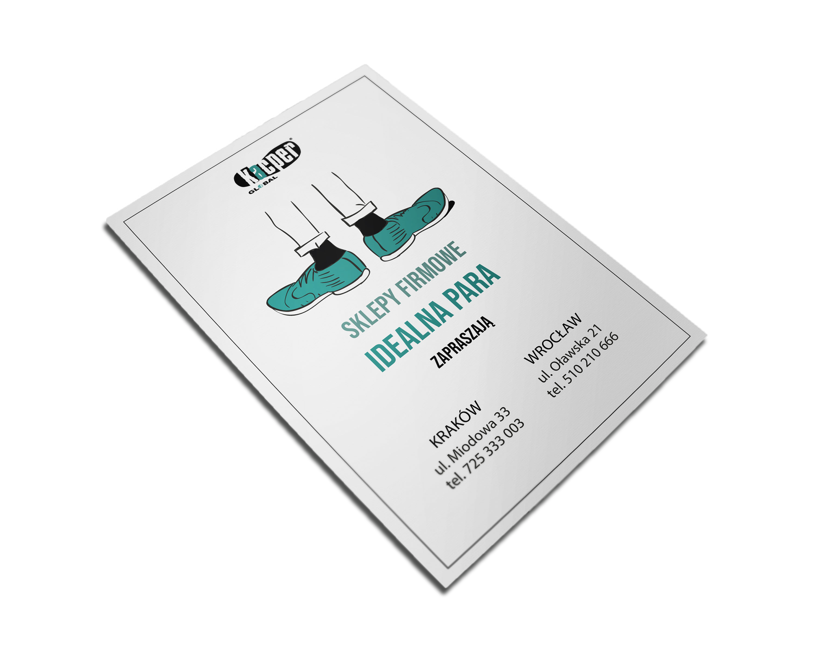
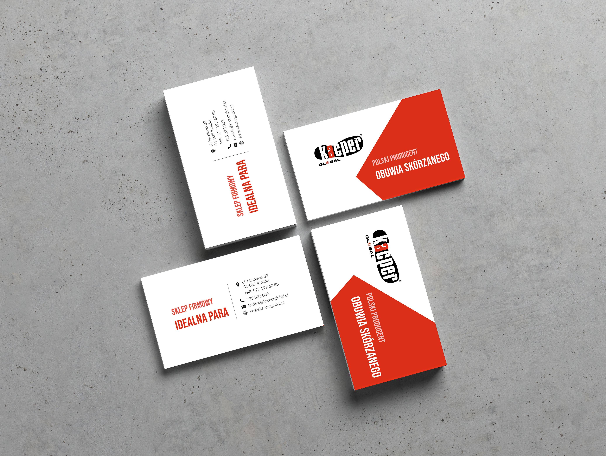
kolejny projekt
plakaty
dla producenta obuwia
plakaty
dla producenta obuwia
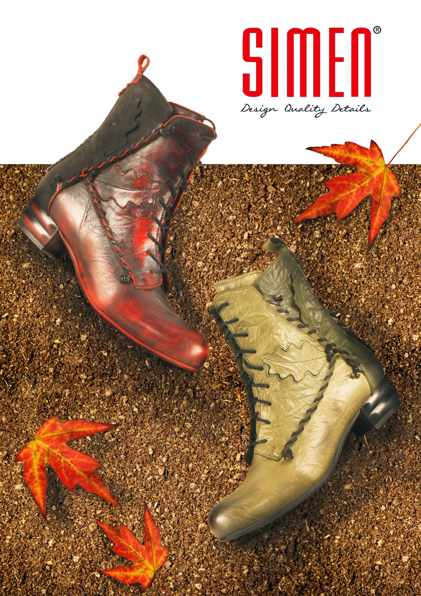

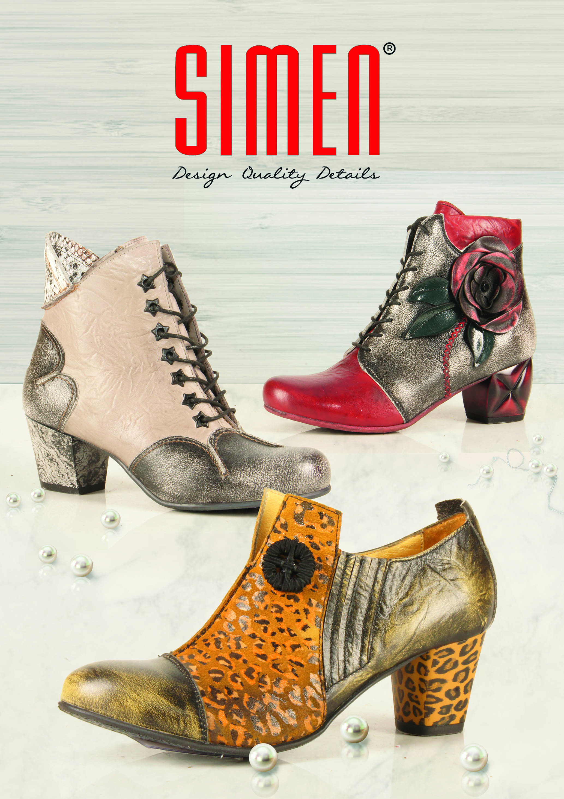